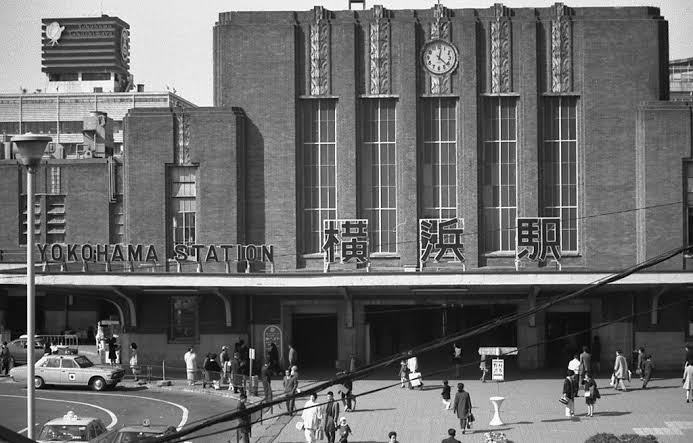
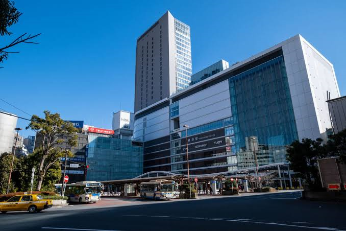
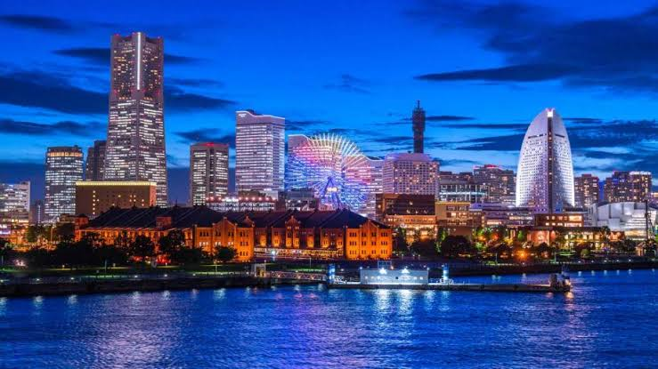
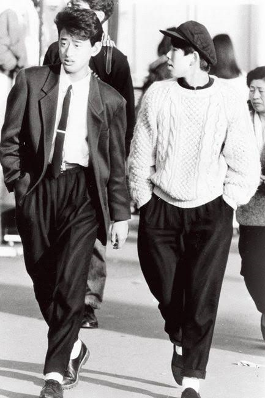
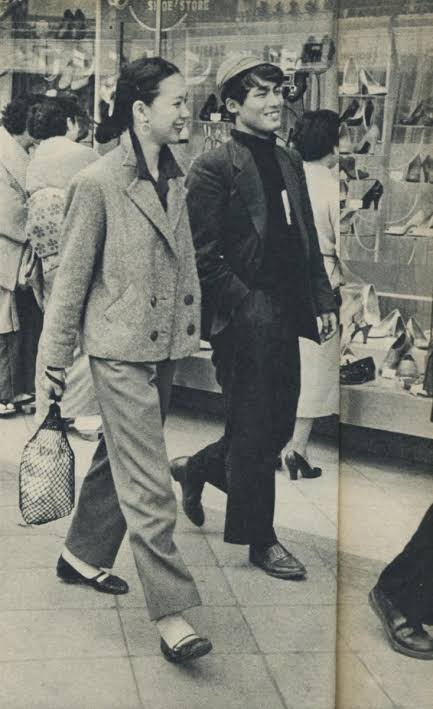
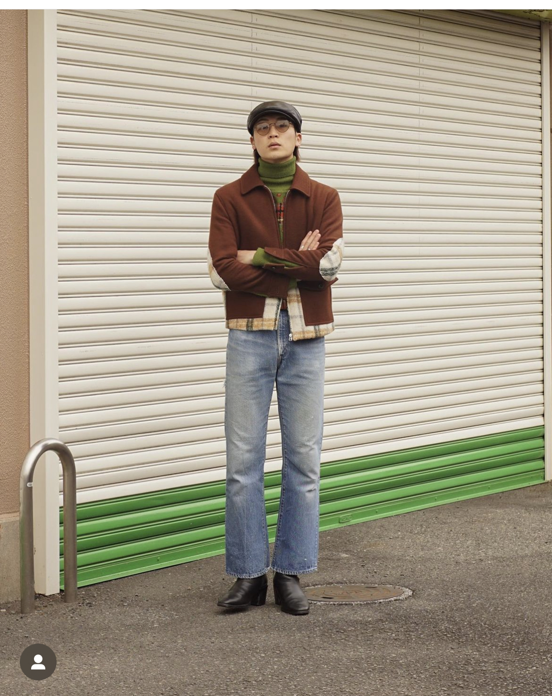
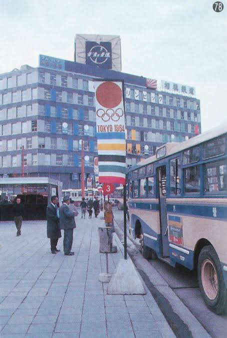
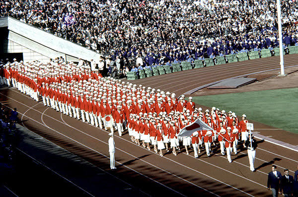

インタビュー
①今まですんできた地域について
②横浜の好きなところ
③今横浜は、綺麗でオシャレなイメージがあるが、50年前もおんなじだったか。オシャレな人が多かったか・歩いている人の雰囲気など



④最近昭和のファッションが流行っているが、現在の若者のファッションについて思うこと




⑤1960年代オリンピックがあったが、オリンピック前とオリンピック後で変化したと思うところ


⑥学生時代の自分に助言するなら
⑦今の自分が学生時代に戻ったらまず何をするか
⑧生きていく上で大切にしている考え方
⑨